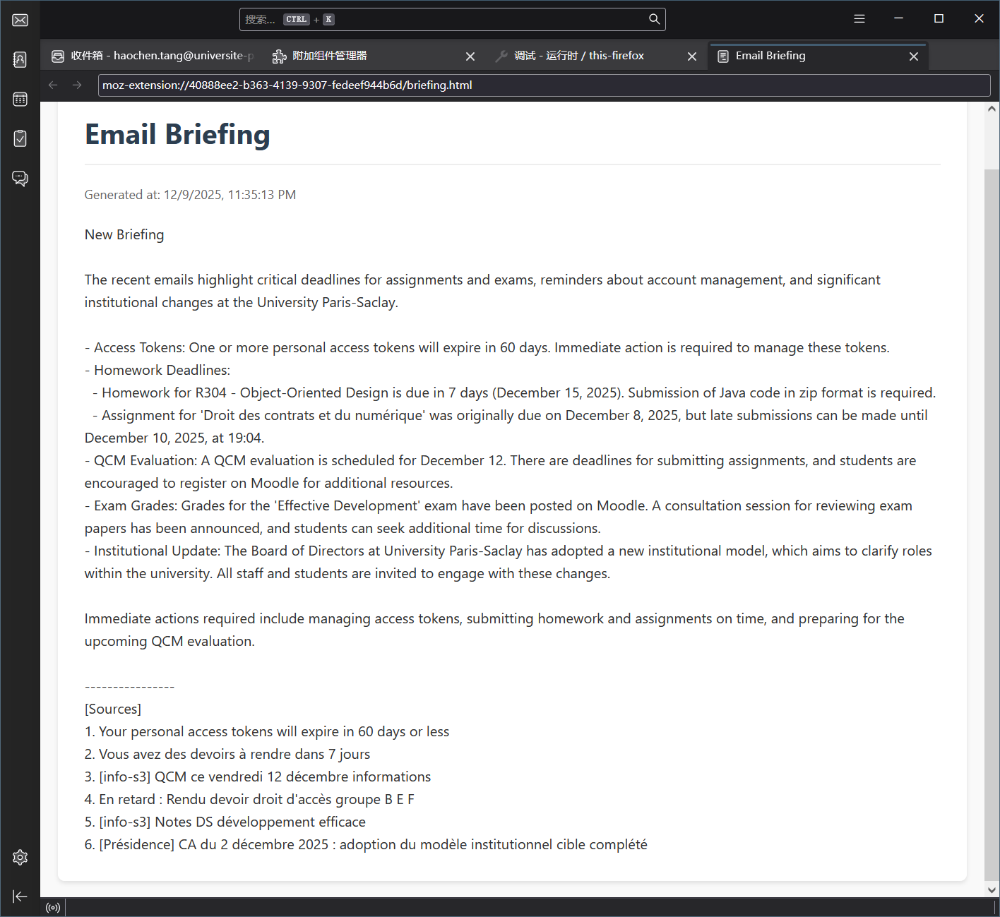
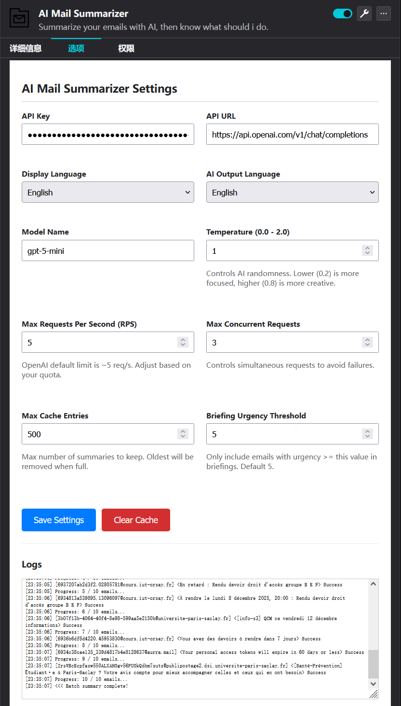
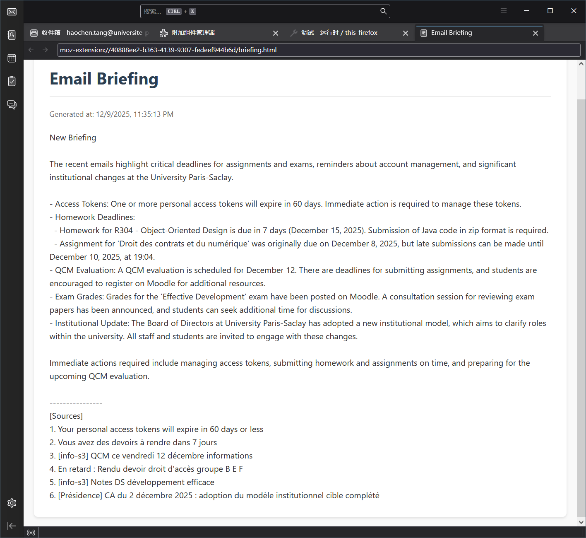
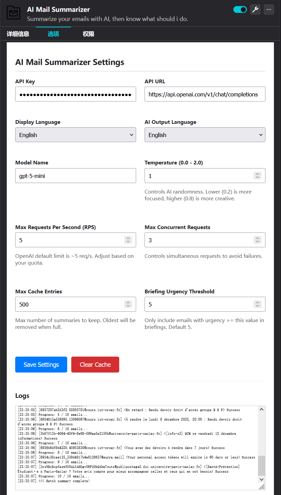

This Thunderbird extension leverages the WebExtension API and advanced asynchronous JavaScript to integrate local (Ollama) and cloud (OpenAI) LLMs directly into the email client. The architecture features a modular backend for handling AI requests and a responsive frontend for real-time user interaction. Notably, this project was built using "Vibe Coding" methodology, allowing for rapid iteration and deployment—the first functional release was published in just under 8 hours of development. 此 Thunderbird 扩展利用 WebExtension API 和高级异步 JavaScript，将本地（Ollama）和云端（OpenAI）大语言模型直接集成到邮件客户端中。架构采用模块化后端处理 AI 请求，并配备响应式前端以实现实时用户交互。值得一提的是，该项目采用“Vibe Coding”方法构建，实现了极速迭代与部署——仅用约 8 小时开发时间便发布了第一个可用版本。 Cette extension Thunderbird exploite l'API WebExtension et JavaScript asynchrone avancé pour intégrer des LLM locaux (Ollama) et cloud (OpenAI) directement dans le client de messagerie. L'architecture comprend un backend modulaire pour gérer les requêtes IA et un frontend réactif pour une interaction utilisateur en temps réel. Notamment, ce projet a été construit en utilisant la méthodologie "Vibe Coding", permettant une itération et un déploiement rapides : la première version fonctionnelle a été publiée en moins de 8 heures de développement.
GitHub: https://github.com/FuLuTang/tb-ai-summary
Download: Thunderbird Add-ons
Key Features 主要功能 Fonctionnalités Clés
- Context-aware AI Chat for individual emails. 基于上下文的单封邮件 AI 对话。 Chat IA contextuel pour les e-mails individuels.
- Support for Ollama (Local) and OpenAI (Cloud). 支持 Ollama（本地）和 OpenAI（云端）。 Support pour Ollama (Local) et OpenAI (Cloud).
- Unread Email Briefing & Smart Categorization. 未读邮件简报与智能分类。 Briefing des e-mails non lus et catégorisation intelligente.
Project Gallery 项目展示 Galerie du Projet
 


